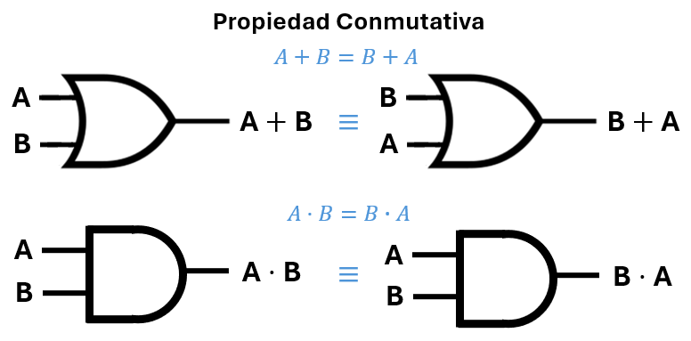
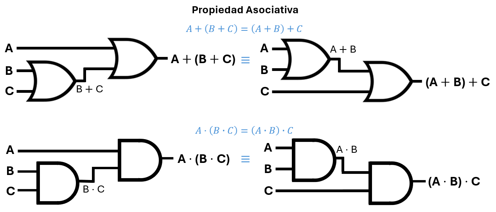
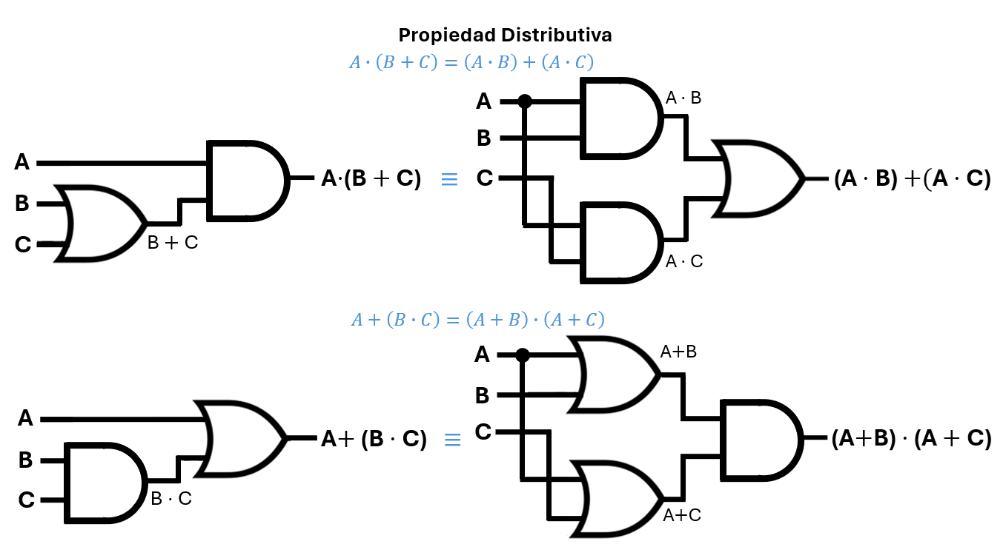
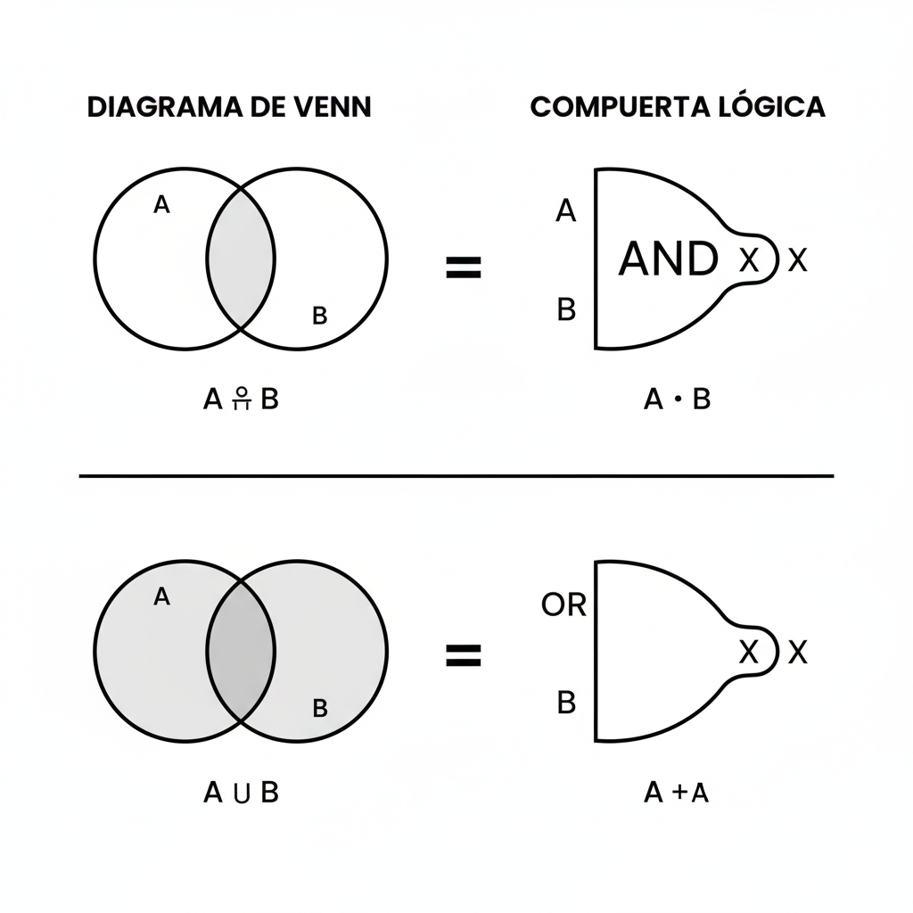

Unidad 3: Fundamentos de Cómputo - Lección 21
Bienvenidos a la Unidad 3. Aquí descubriremos que la Electrónica, la Lógica y las Matemáticas son trillizas separadas al nacer. Existe un concepto llamado Isomorfismo (misma forma), que nos dice que sus reglas son idénticas.
Es un sistema matemático formado por un conjunto \(B\) con solo dos elementos: \(\{0, 1\}\) (que representan Falso/Verdadero, Apagado/Encendido), junto con dos operaciones binarias llamadas adición (\(+\)) y producto (\(\cdot\)).
Aunque usamos los mismos símbolos que en la aritmética, las reglas son diferentes porque el conjunto es limitado. Desde niños hemos usado tablas similares para sumar y multiplicar números naturales. Ahora las adaptaremos a nuestro nuevo universo.
En la escuela aprendiste tablas como estas. Observa que el resultado puede ser cualquier número natural.
| + | 0 | 1 | 2 | 3 | 4 | … |
|---|---|---|---|---|---|---|
| 0 | 0 | 1 | 2 | 3 | 4 | … |
| 1 | 1 | 2 | 3 | 4 | 5 | … |
| 2 | 2 | 3 | 4 | 5 | 6 | … |
| 3 | 3 | 4 | 5 | 6 | 7 | … |
| 4 | 4 | 5 | 6 | 7 | 8 | … |
| … | … | |||||
| · | 0 | 1 | 2 | 3 | 4 | … |
|---|---|---|---|---|---|---|
| 0 | 0 | 0 | 0 | 0 | 0 | … |
| 1 | 0 | 1 | 2 | 3 | 4 | … |
| 2 | 0 | 2 | 4 | 6 | 8 | … |
| 3 | 0 | 3 | 6 | 9 | 12 | … |
| 4 | 0 | 4 | 8 | 12 | 16 | … |
| … | … | |||||
Ahora reducimos el universo a solo dos elementos. Las tablas de adición y producto cambian drásticamente:
| + | 0 | 1 |
|---|---|---|
| 0 | 0 | 1 |
| 1 | 1 | 1 |
| · | 0 | 1 |
|---|---|---|
| 0 | 0 | 0 |
| 1 | 0 | 1 |
En aritmética, \(1+1 = 2\); en álgebra de Boole, \(1+1 = 1\). En aritmética, \(0·0 = 0\); en álgebra de Boole, \(0·0 = 0\) (coincide). En aritmética, \(1·1 = 1\); en álgebra de Boole, \(1·1 = 1\) (también coincide).
La diferencia más notable es que en Boole no existe el número 2: todo resultado se queda dentro del conjunto \(\{0,1\}\). Por eso la tabla de la adición tiene solo unos y ceros.
El álgebra de Boole cumple una serie de propiedades que la convierten en una estructura matemática sólida y coherente. Estas propiedades son isomorfas a las que rigen los conjuntos y los circuitos lógicos. Comenzamos con la conmutatividad.
El orden de las entradas no altera el resultado, tanto para la suma lógica (OR) como para el producto lógico (AND).

Fig. 1: Conmutatividad: cambiar el orden de las entradas no modifica la salida.
En el lenguaje de conjuntos: \(A \cup B = B \cup A\) y \(A \cap B = B \cap A\). En circuitos, la compuerta OR y la compuerta AND son conmutativas: puedes intercambiar sus entradas sin que el resultado cambie.
La forma en que se agrupan las operaciones no altera el resultado final, tanto para la suma lógica (OR) como para el producto lógico (AND).

Fig. 2: Asociatividad: agrupar de diferente manera no cambia la salida.
En el lenguaje de conjuntos: \(A \cup (B \cup C) = (A \cup B) \cup C\) y \(A \cap (B \cap C) = (A \cap B) \cap C\). En circuitos, las compuertas OR y AND se pueden conectar en cascada sin importar el orden de los paréntesis: el resultado es siempre el mismo.
El producto lógico se distribuye sobre la suma, y viceversa (algo que no ocurre en la aritmética común).

Fig. 3: Distributividad: el producto sobre la suma (izquierda) y la suma sobre el producto (derecha).
En el lenguaje de conjuntos: \(A \cap (B \cup C) = (A \cap B) \cup (A \cap C)\) y \(A \cup (B \cap C) = (A \cup B) \cap (A \cup C)\). En circuitos, esta propiedad permite transformar combinaciones de compuertas AND y OR, facilitando la simplificación de diseños.
En matemáticas y computación, dos sistemas son isomorfos si existe una correspondencia biunívoca entre sus elementos y sus operaciones, de modo que todo lo que se puede hacer en uno se puede replicar exactamente en el otro.
Analogía cotidiana: Un plano de una casa (dibujo) y la casa construida (realidad) son isomorfos: cada pared en el plano corresponde a una pared física, cada habitación a una habitación real, y las relaciones espaciales se preservan. Si entiendes el plano, entiendes la casa.
En nuestro curso: Una misma estructura lógica puede expresarse como circuito eléctrico, como fórmula matemática o como diagrama de conjuntos. ¡Todas son la misma cosa vista desde diferentes lentes!
Con la Siguiente tabla puedes traducir un problema filosófico a un circuito eléctrico, o viceversa.
| Concepto | Lógica (\(p, q\)) | Conjuntos (\(A, B\)) | Circuitos (\(A, B\)) |
|---|---|---|---|
| "Y" (Intersección) | \(\land\) (Conjunción) | \(\cap\) (Intersección) | \(\cdot\) (AND) |
| "O" (Unión) | \(\lor\) (Disyunción) | \(\cup\) (Unión) | \(+\) (OR) |
| "NO" (Inverso) | \(\neg p\) (Negación) | \(A^c\) (Complemento) | \(\bar{A}\) (NOT) |
| Todo / Verdad | \(V\) (Verdadero) | \(U\) (Universo) | \(1\) (5V) |
| Nada / Falso | \(F\) (Falso) | \(\emptyset\) (Vacío) | \(0\) (GND) |
⚠️ Nota técnica: En circuitos, "1" significa voltaje alto (generalmente 5V) y "0" significa voltaje bajo (0V, GND). Es el mismo significado lógico pero con una implementación física.
¿Recuerdas los diagramas de bolas del colegio? Eran circuitos disfrazados. Vamos a analizar la geometría de la decisión:

Mira la zona sombreada en la intersección ($A \cap B$). Es pequeña. Solo un pedacito en el centro.
Mira la zona de la unión ($A \cup B$). Es grande. Abarca casi todo.
En Venn, el complemento ($A^c$ o $A'$) es todo lo que está FUERA del círculo de A, pero dentro del cuadrado (el Universo).
En Circuitos (NOT): Si el círculo es "Encendido" (1), todo el espacio vacío de afuera es "Apagado" (0). La compuerta NOT te lleva de adentro del círculo hacia afuera.
Cuando en la Unidad 2 armaste circuitos con compuertas NOT, AND y OR, estabas construyendo manifestaciones físicas de los conceptos de conjuntos y lógica. El isomorfismo explica por qué esos circuitos se comportaban exactamente como los diagramas de Venn que dibujabas en el colegio: ¡la estructura matemática es la misma!
Ahora, en la Unidad 3, daremos un paso más: usaremos esa misma estructura para calcular con números binarios. El isomorfismo nos permite “reutilizar” el conocimiento que ya tienes.
Imagina que debes diseñar un sistema electrónico para una oficina. La regla es:
"Se permite el acceso si (tiene tarjeta de empleado Y huella válida) O (es administrador)."
Vamos a traducir esta regla a las tres representaciones:
| Representación | Expresión |
|---|---|
| Lógica de proposiciones | \(A = (\text{Tarjeta} \land \text{Huella}) \lor \text{Admin}\) |
| Conjuntos | \(A = (T \cap H) \cup \text{Admin}\) |
| Circuito (compuertas) | \(A = (T \cdot H) + \text{Admin}\) |
¡Acabas de convertir un reglamento en un plano eléctrico! Ahora, si invirtieras el proceso, podrías tomar un circuito y explicar con palabras qué hace.
Observa este circuito: \(S = \overline{A} \cdot B + A \cdot \overline{B}\).
a) Escríbelo como una expresión de conjuntos.
b) Traduce esa expresión a una frase en lenguaje natural (¿qué condición cumple la salida?).
c) ¿Reconoces qué compuerta lógica corresponde a esta expresión? (Pista: mira la tabla de verdad).
Respuesta al final de la lección.
El isomorfismo no es solo una herramienta matemática: es una habilidad de pensamiento transversal. En cualquier campo, poder traducir un problema a otro lenguaje te da nuevas perspectivas y soluciones más elegantes.
Reflexión: ¿En qué otras áreas de tu vida podrías aplicar esta habilidad de “cambiar de lenguaje” para entender mejor un problema?
Durante casi 100 años, el Álgebra de Boole fue solo una curiosidad filosófica para "analizar el pensamiento humano". Los ingenieros de teléfonos, por otro lado, conectaban cables a prueba y error.
En 1937, un estudiante de maestría de 21 años llamado Claude Shannon tuvo una idea creativa: "¿Y si los interruptores telefónicos en realidad están haciendo álgebra de Boole?".
El Momento Eureka: Shannon no descubrió la electrónica ni la lógica; descubrió el puente entre ambas. Su tesis es considerada la más importante del siglo XX porque fundó la Era Digital.
Dato Curioso: Shannon no era un científico aburrido. Era malabarista, montaba monociclo en los pasillos de los laboratorios Bell e inventó máquinas inútiles solo por diversión. ¡La creatividad y el juego son parte de la ingeniería!
Completa la siguiente tabla traduciendo cada frase a los otros dos lenguajes:
| Lenguaje Natural | Lógica / Conjuntos | Circuito |
|---|---|---|
| "El sistema se activa si (detecta movimiento Y es de noche) O (hay una alarma manual)" | ||
| \(S = (A \cup B) \cap C\) | ||
| \(S = \overline{A \cdot B}\) |
Respuestas al final de la lección.
Ejercicio inverso:
Autoevaluación: